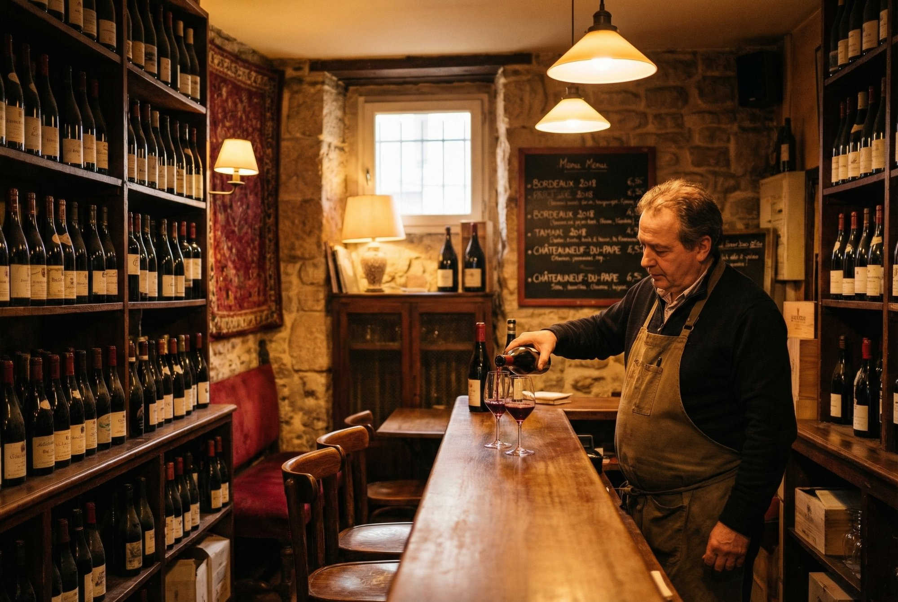

Private · Two Guests Only
A Private Wine and Cheese Tasting for Two, in a Montmartre Cellar
Five wines, five pairings, two hours underground at the foot of Montmartre. Just the two of you and me. €390 for the two of you, everything included.
The story
I live five minutes from here, in Pigalle.
Rue Tardieu is the last flat street before the hill starts. The funicular, the crowd walking up to Sacré-Cœur, the noise of all of it. You come into the shop, you go down about twenty steps, and the noise stops.
A cellar holds the same temperature all year, so in August it is cold down there and in January it is not. Stone walls, a low vault, one table, glasses lined up on a sheet of white paper so you can actually see the colour of what you are drinking.
Nobody else comes down. It is you two, me, and whoever brings the plates.
I pour, we taste, you tell me what you smell.
You are allowed to be wrong, there is nobody down here to hear it.
That is most of the reason I do this in a cellar with the door shut rather than in a bar.

What happens in the two hours
The first ten minutes.
We sit down and I pour a glass. Before anything else, I show you how to taste: look at it, smell it, drink it, then breathe out through your nose. That last part is where the flavour actually lives, and almost nobody is taught it.
Then five times in a row, the same move.
Taste the wine on its own. Taste the cheese on its own. Then keep a little cheese in your mouth, add a sip of wine, chew them together, and breathe out. That is the moment a pairing either works or falls apart, and you feel it happen yourself instead of taking my word for it.
Around the one hour mark, we go back to the first wine.
It has been open since you sat down. You taste it again. It is not the same wine.
Nothing I say about aeration lands the way that does.
Two ages of the same cheese, side by side.
Comté at 18 months and at 36 months, in front of you at the same time. It is the point in the evening where the two of you usually disagree, and that is the useful part.
The last pairing is sweet against salt.
A fortified Muscat on a blue cheese. The one people arrive certain they will not like.
Questions, whenever they turn up.
How a cheese is actually made, why a grape tastes of one place and not another, how to serve wine at home, what to buy when you get back. This is a conversation with a structure, not a lecture. I start wherever you are, including from zero.
On the table throughout:
bread, walnuts, raisins, and a carafe of water, still and sparkling.
The next morning,
a tasting card lands in your inbox as a PDF. Every wine and every cheese in the order it was poured, with the producer, the grape, the appellation and the village, so you can find these bottles again at home.
The sequence
Your host
I am Thomas. I am French, I am WSET Certified, and I have lived in Pigalle for years. Before this I worked in fintech in London. I host every tasting myself, in English, and I have never sent a stand-in. I am not a guide reading a script about a neighbourhood I commute to. I buy my cheese on this street.
Thomas
€390 for the two of you. Everything included.
- Five wines
- The cheese board
- Bread, walnuts, raisins
- Still and sparkling water
- Two hours of the cellar with nobody else in it
- Your tasting card by email afterwards
No service charge added at the end. No tipping expected. That is the whole number.
Pay securely by card, Apple Pay, Klarna or Link.
A private wine and cheese tasting for two at Wine & Cheese Paris costs €390 in total, lasts two hours, includes five wines and five pairings, and takes place in an underground cellar at 6 rue Tardieu in Montmartre, Paris 18e, hosted in English by Thomas Perrien, a WSET-certified guide who lives in the neighbourhood.
Next available
Cave Les Piqueurs, 6 rue Tardieu, 75018 Paris. Two hours. Two guests. In English.
Each Saturday and Sunday below is a pair: one run of five bottles, opened Saturday and kept under vacuum overnight rather than resealed with a cork. Book either day of a pair for the same five wines, the same five pairings, the same €390. Sunday's pour is not a leftover, it is the same wine a day further into the air, and that is usually the more interesting glass, not the lesser one.
Saturday 8 August 2026
11:00am to 1:00pm
Private, just the two of you
4:00pm to 6:00pm
Private, just the two of you
7:00pm to 9:00pm
Private, just the two of you
Sunday 9 August 2026
11:00am to 1:00pm
Private, just the two of you
4:00pm to 6:00pm
Private, just the two of you
7:00pm to 9:00pm
Private, just the two of you
Saturday 15 August 2026
11:00am to 1:00pm
Private, just the two of you
4:00pm to 6:00pm
Private, just the two of you
7:00pm to 9:00pm
Private, just the two of you
Sunday 16 August 2026
11:00am to 1:00pm
Private, just the two of you
4:00pm to 6:00pm
Private, just the two of you
7:00pm to 9:00pm
Private, just the two of you
Saturday 22 August 2026
11:00am to 1:00pm
Private, just the two of you
4:00pm to 6:00pm
Private, just the two of you
7:00pm to 9:00pm
Private, just the two of you
Sunday 23 August 2026
11:00am to 1:00pm
Private, just the two of you
4:00pm to 6:00pm
Private, just the two of you
7:00pm to 9:00pm
Private, just the two of you
You pay now, by card. You get the exact address and my phone number straight away. Booking closes at midday on the day itself, and yes, people book this the night before.
Another date, or a weekday?
Ask about a date that is not listed
Something other than this?
A different date, four of you instead of two, or somewhere else entirely: a private apartment, your hotel, a boat on the Seine. Tell me what you have in mind and I will send you a quote. Reply usually within four hours.
Ask ThomasFAQ
€390 for the two of you. That covers the five wines, the cheese board, bread, walnuts, raisins, water, the two hours of private use of the cellar and the tasting card sent to you afterwards. Nothing is added at the end and no tip is expected in France.
Really private. The cellar is booked for the two of you for the full two hours. Nobody else comes down except the person bringing the plates. The shop upstairs stays open to the public, the cellar does not.
Five wines, poured by me, each one matched to something from the cheese board, plus bread, walnuts, raisins and a carafe of water. The line-up changes with what is good that week, but it always spans several French regions and several different families of cheese: fresh and lactic, pressed and uncooked, pressed and cooked, blue. A charcuterie board or a dessert pairing can be added if you tell me when you book.
For most people, yes. Five cheeses, bread and nuts across two hours is a real meal, which is why the 7:00pm slot works as your evening rather than something you squeeze in before it. If you have big appetites, eat something small first or ask me to add the charcuterie.
No. Most people arrive knowing they like some wines and not others and unable to say why. That is the ideal starting point. If one of you is well ahead of the other, that is fine too, I run the table at both levels at once. You leave with a method you can use in a shop, not a list of names to memorise.
Cave Les Piqueurs, 6 rue Tardieu, 75018 Paris, at the foot of Montmartre. Métro Anvers, line 2, is two minutes away. Abbesses, line 12, is about five. The tasting is hosted in English throughout. Note that the cellar is downstairs, roughly twenty steps, with no lift and no step-free route.
Vegetarians are completely fine, no cheese here contains meat. But I will be straight with you: if one of you is pregnant, does not drink alcohol, or is lactose intolerant, this particular tasting is not the right thing to book. It is five glasses of wine and a cheese board over two hours, and there is no honest way to make that work around it. Write to me and I will build you something else rather than sell you this.
Cancel or move your booking free of charge up to 48 hours before the start time and you get all €390 back. Inside 48 hours, a €100 deposit is kept and €290 is refunded to your card, because the wine and the cheese have already been bought for you by then. Moving to another date inside 48 hours is free if I can fill the slot, so ask me before you cancel.